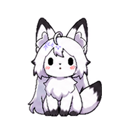
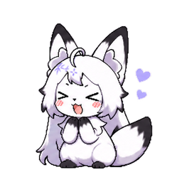
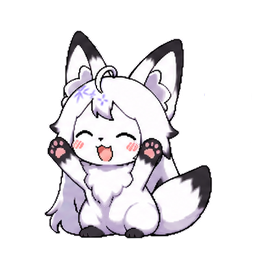
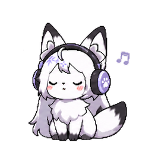

Idle얌전히 기다려요Section 03
좋아하는 사람이라면
누구와도 함께할 수 있습니다
Oshi Desk는 특정 캐릭터에만 머무르지 않습니다. 새로운 친구들이 계속 업데이트되어 나만의 바탕화면 속 펫으로 확장됩니다.

YOUR LITTLE DESKTOP FRIEND
좋아하는 사람과 늘,
함께할 수 있도록
DOWNLOAD

최신 Windows/macOS 설치 파일 · 무료
Section 01
귀여운 Desk Pet이 바탕화면 위에서 기다리고, 걷고, 쉬고, 반응합니다. 작은 움직임만으로도 데스크탑에 좋아하는 사람의 분위기를 더할 수 있어요.

Idle얌전히 기다려요
Listening함께 들어요Section 02
캐릭터를 우클릭하면 플로팅 UI가 열립니다. 영상, 음악, SNS와 커뮤니티 등 자주 방문하는 채널로 빠르게 이동할 수 있어요.
Section 03
Oshi Desk는 특정 캐릭터에만 머무르지 않습니다. 새로운 친구들이 계속 업데이트되어 나만의 바탕화면 속 펫으로 확장됩니다.
OUR BEGINNING
좋아하는 존재가 일상 가까이에 머무는 경험을 목표로 합니다. 화면 한편의 조용한 움직임이 평범한 하루를 조금 더 다정하게 만들기를 바랍니다.